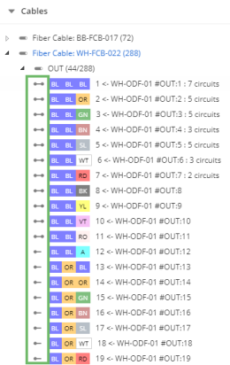

The Show Terminations function uses tracing to find the upstream and downstream terminations of a set of ports or strands, and displays them symbolically in the tree view. This can be useful when designing new connections, for example for finding an unused fiber to connect to.
To show terminations:
Right-click, and then select Show terminations. The application performs a network trace on the selected strands and displays the terminations found using icons in the tree.

Figure: Showing terminations
The meaning of each icon is described in the following table.
| Icon | Description |
|---|---|
| Both upstream and downstream ends of the path terminate at a port. | |
| The upstream end of the path terminates at a port. | |
| The downstream end of the path terminates at a port. | |
| Neither end of the path terminates at a port. |
When you hover over an icon, you can view the connection details.